+20°
↖ 2 м/c

Мы бежали
марафон
марафон за
19 раз
марафонцы пересеклиреки и каналы
2:16:12
время победителя —кенийца Саламона Барнгетунга
«Белые ночи» Санкт-Петербург
29 июня 2014
Толщина змея
Возраст и пол
Твитнуть
Сайт марафона
Визуализация
Лаборатории данных
1845 бегунов
и 339 бегуний
от 18 до 78 лет
по времени финиша
Результаты победителей:
I
I
I
I
I
I
I
I
I
I
I
I
Мужские
и
женские
взрослые разряды:
МС
КМС
МС
2
КМС
1
1
2
3
3
Результаты
Показать ещё 100 результатов